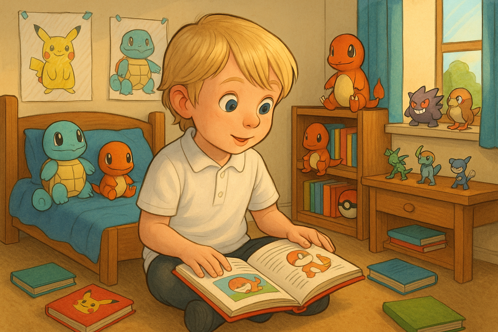
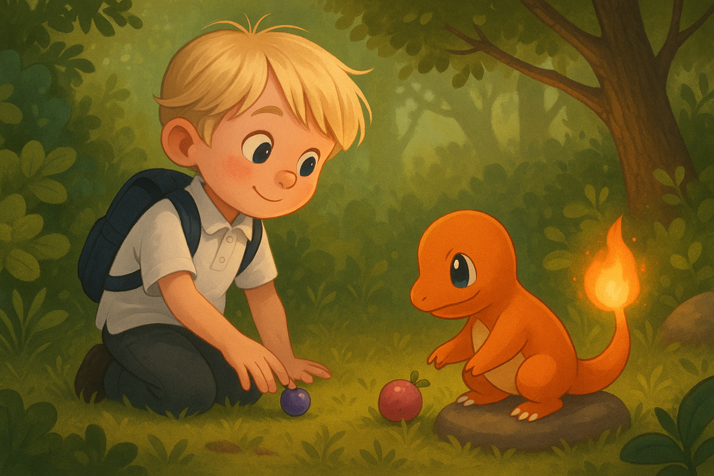
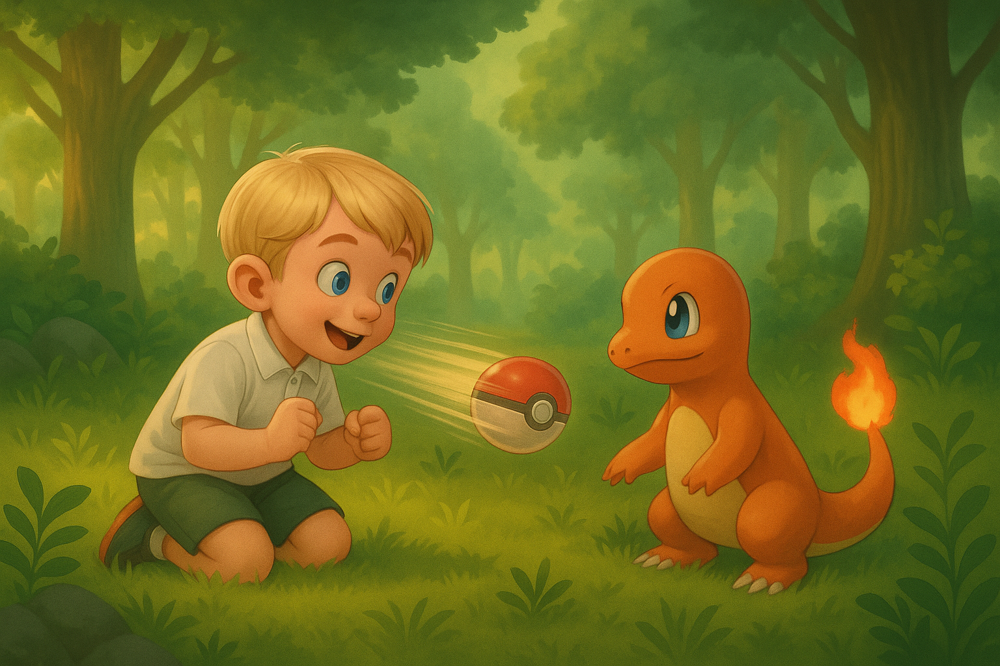
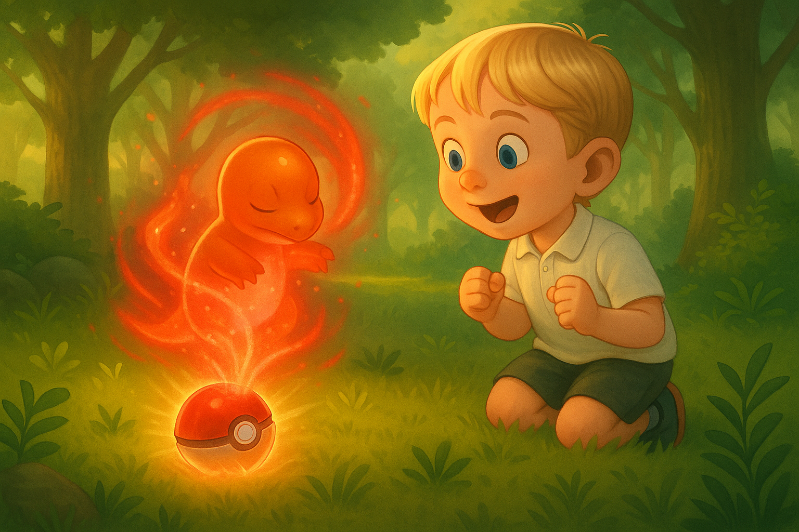
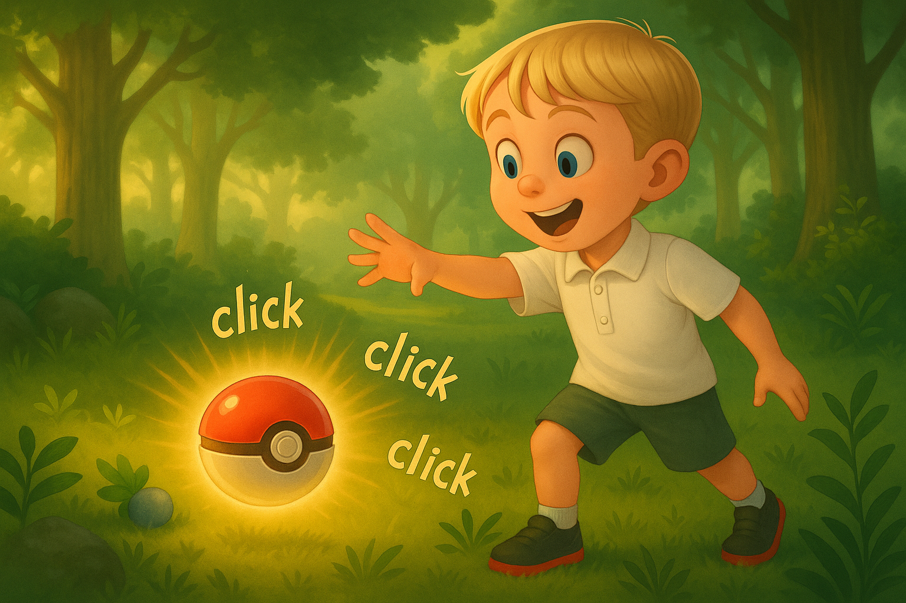
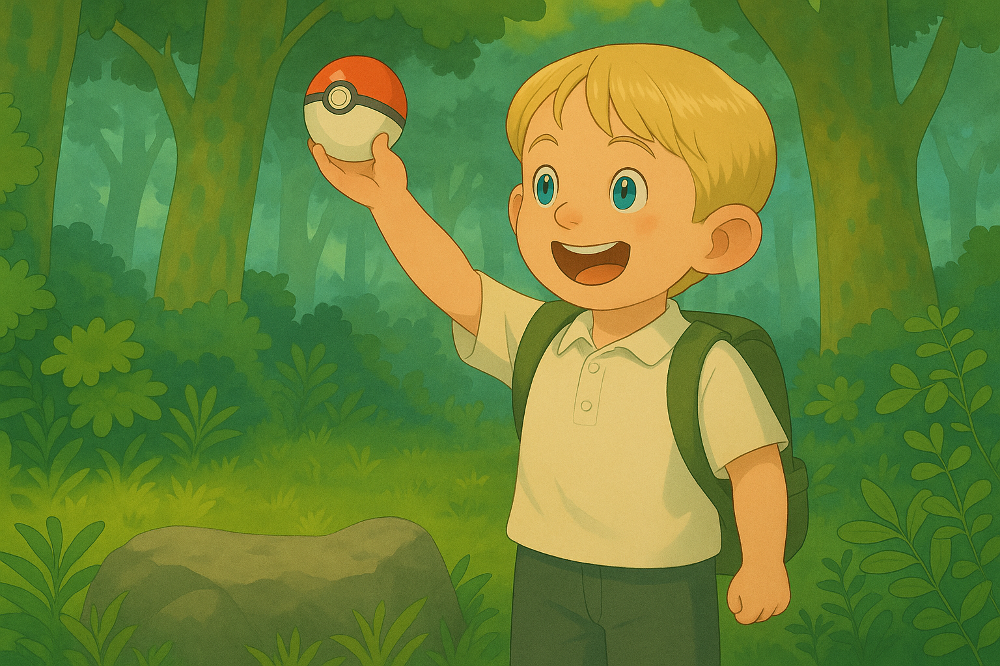

The Beginning of Travis’s Journey
In the peaceful town of Chadsmoor, a six year old boy named Travis dreamed
of becoming a Pokémon Master. While others played games, he studied Pokémon
types, moves, and strategies. One sunny morning, he wandered into the woods
with a single Poké Ball in his pocket, determined to find his first partner.

After hours of walking, he heard rustling in the bushes. Carefully stepping closer,
he saw a Charmander—its tiny flame-tail flickering as it warmed itself on a rock. Travis
held his breath. He reached into his backpack, took out a berry, and gently placed it on
the ground. The Charmander sniffed the air, took a few steps, and began nibbling the berry.

Seeing his chance, Travis tossed his Poké Ball. It hit the Charmander, opened with a flash,
and the little fire Pokémon disappeared inside. The ball shook… once… twice… three times—click!
He had caught his first Pokémon! Eyes wide with joy, Travis held the Poké Ball up and whispered,
“We’re going to be the best, partner.”



